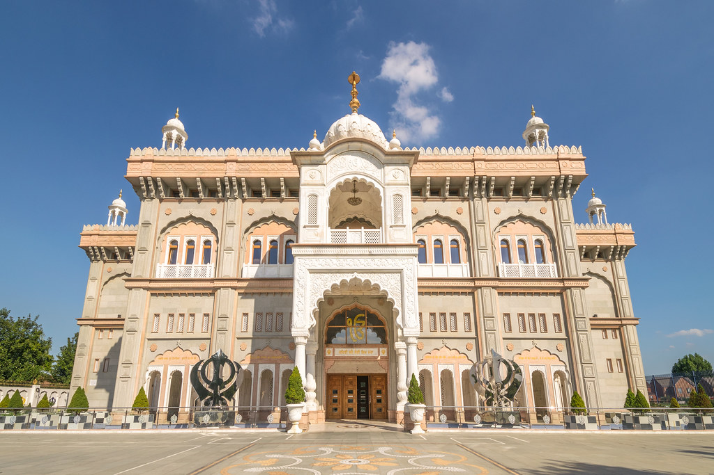
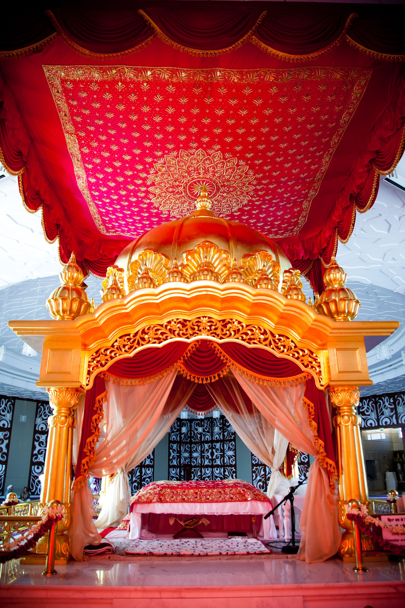

The literal meaning of the Punjabi word Gurdwara is 'the residence of the Guru', or 'the door that leads to the Guru'. In a modern Gurdwara, the Guru is not a person but the book of Sikh scriptures called the Guru Granth Sahib.

The first Gurdwara in the world was built by Guru Nanak in 1521-2 at Kartarpur.
A Gurdwara is also a place to celebrate rites of passage including birth, marriage and funeral services, this is to do them in front of God and the Guru as it shows respect to all.

A Gurdwara is the place where Sikhs come together for congregational worship.